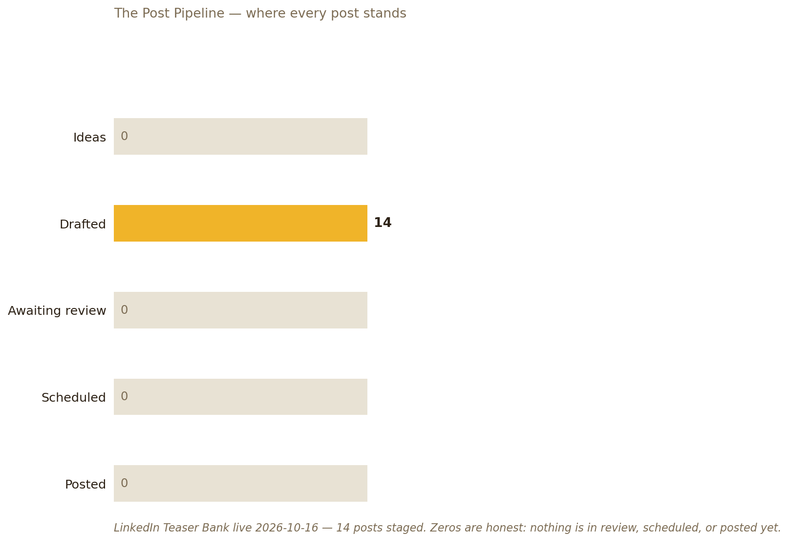

I draft posts in how Dave actually talks — product praise, tech tips, building-in-public — and stage every one for his one-tap approval. Nothing ever posts without his sign-off.
Mission statement approved 2026-10-16. The current campaign: the social rollout — Knowledge Navigator (1987) → Rae Assist (1993) → Buddy OS (2026). "The vision took 40 years. We're building it now."
Post 1 is live. The 40-year arc posted Tue 2026-10-20. First check: 37 impressions, 0 reactions, 0 comments — early hours. An engagement watch checks every 3 hours through Nov 2; any comment gets a drafted reply in Dave's voice for his approval. Nothing ever replies itself.
The audit (2026-10-20). The audience is real: 5,309 followers, 500+ connections, 15 recommendations received. Present: photo, banner, 48 skills. Missing: a Featured section (absent entirely), Rae Technology 1992–96 (the company behind Post 1's story isn't on the profile at all), and any trace of the Buddy System. Headline today: just “UX & Product Designer.” The posts tell a story the profile doesn't — yet.
The plan. New headline (three options in the brief), a first-person About that opens “I've been building the same product for 40 years,” a new banner art-directed by 🖼️ Art Director, Featured section added, Rae Technology + Buddy System experience entries, creator mode on, skills pruned. One open decision is Dave's: Open to Work is currently public — keep, narrow, or drop. Target: the new profile live by Tue 2026-10-27, so the Money Buddy posts land on it.
The inward side of the job — what your feeds are saying, ranked by what you care about. Refreshed twice daily (~6 AM + ~5 PM PT). Evening edition: Wed 2026-10-28.
Newsfeed plus the friends feed read this evening, two pages each — 18 posts in all, several of them repeats across the two feeds or of earlier editions (the Kwik Serv Jackson thank-you and Michael Randazzo's Sicily posts among them). Ron is the only one of Nan, Quentin, Sawyer, Amanda, Ron, Emile or Rachel in the pages read. Two ad posts were skipped. All four items above are from today, so Top 4 — no padding.
Following feed read this evening returned 4 posts; the fourth (a Sneako/Akademiks event rumour) is off your interests, so Top 3, not 5 — no padding. All three listed items were verified individually.
Following feed read this evening — only 4 posts came back, and the other three (two NBC News items and a Don Lemon election-night promo) are off your interests, so Top 1, not 5: a thin read, honestly labelled. Calls kept low per Threads' strict rate limits.
Fresh read via the browser this evening, 5:42–5:49 PM — all eight subs loaded (r/classiccars, r/littlebritishcars, r/Porsche, r/BMW, r/cycling, r/UXDesign, r/apple, r/ClaudeAI), nothing bot-blocked. Sub leaders just below the cut: r/ClaudeAI's Claude-as-senior post (3.6K), r/apple's tracked stolen iPhones story (2.9K), r/BMW's over-engineered X5 doors (1.7K), r/cycling's why-don't-brands-lobby thread (464), r/littlebritishcars' just-bought dream-car 1960 MGA 1600 (445) and r/UXDesign's last-designer-standing post (248).
X is public/topic search only — no personal timeline access. Fresh profile reads this evening, 5:42–5:49 PM: all four profiles loaded publicly, each with a login prompt after the first posts. Just below the cut: @markgurman's post (~7 hours before the read) that the old MacBook Pros stick around at prior prices, with the touch models at $2,899/$3,399 in its thread. @ClaudeDevs has nothing newer than Oct 23 (MCP Tasks).
Reading your LinkedIn feed is phase 2. Your own posts' engagement is already covered — the teaser-drip watch reports Post 1 in this thread (787 impressions and 11 reactions, 2 comments — Dianna Mullins' QA offer and Dave's reply — at the late-afternoon check today), and the Makeover plan is in the card above. The drip watch runs through Nov 2.
The LinkedIn Teaser Bank, live as a pipeline. The drip is running — Post 1 posted Tue 2026-10-20, one a day through Mon 2026-11-02, LinkedIn first.
All 14 approved by Dave 2026-10-16 — and the drip is live. Dave posts each day's staged copy himself (copy staged + visual emailed each morning). Post 5 stays held for Penny's consent; Post 14 for the Ko-fi link.
Full post texts live in the LinkedIn Teaser Bank (Buddy Docs).

Built by 📊 Charts Buddy in the Kin chart language from real queue counts. Regenerates as posts move through the pipeline.
Dump what's on your mind about Social Media Buddy — raw and unfiltered. Each dump lands in the buddy's repo (docs/ingest.md) as a timestamped entry — or saves on this device until a repo is linked and a token is connected.
🔒 Connect GitHub to unlock dumping. Paste a token once — it stays on this device only.
Enter dumps it · Shift+Enter for a new line